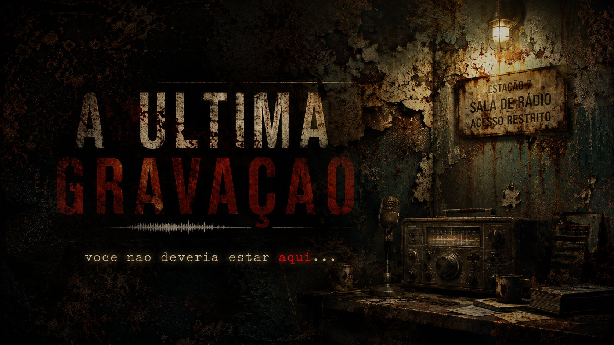

Estação 7, 1987. Os equipamentos ainda estão ligados. O rádio está transmitindo. Você não deveria estar aqui.
12 de outubro de 1987. Marcus Vael, investigador de patrimônio histórico, é enviado pelo Ministério da Cultura para catalogar os equipamentos da Estação 7 — uma pequena rádio FM desativada há quatro anos no interior de Minas.
Trabalho simples. Dois dias, no máximo. O que ninguém disse a Marcus é que a última pessoa enviada aqui nunca entregou o relatório. O que ninguém disse é que os equipamentos ainda estão ligados.
São 23h14. Não há ninguém por milhas. E o rádio está transmitindo.
Um jogo de terror em primeira pessoa no estilo Walking Simulation. Sem jumpscares. O medo aqui é progressivo, construído em silêncio e ausência.
Ambiente 3D em primeira pessoa, movimentação WASD, sala principal e menu inicial. O início de tudo.
Introdução letra a letra, lâmpada com falhas irregulares, fluxo de cenas com fade.
Texturas PBR no web, estante metálica, caixas de papelão e discovery text.
8 elementos, sistema de interação com raycast, rádio narrativo. Marcus Vael fala pela primeira vez.
Voz do investigador anterior, gaveta interativa, log de 1983, sons de passos e checklist do final.
Estrada noturna, fachada da Estação 7, pensamentos por proximidade, gate narrativo e fluxo completo do jogo.
Diário do investigador, final do jogo e export v1.0. A Estação 7 está quase completa.
Acompanhe o desenvolvimento diariamente. Cada dia um novo devlog, cada versão jogável no browser.